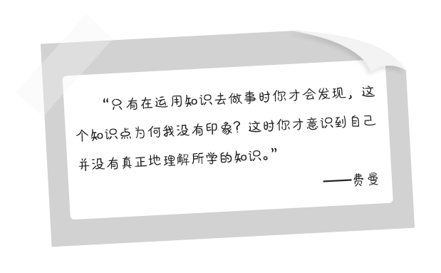
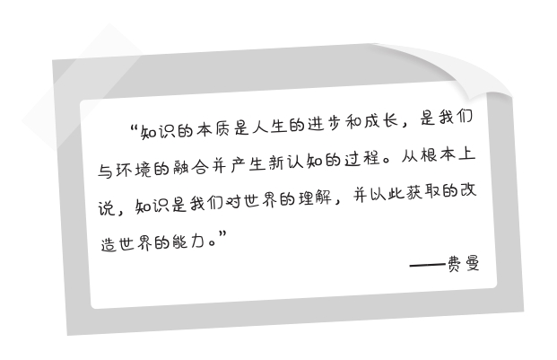

第十六章
怀疑和探索让我们更聪明
在第五部分，我们将要一起探讨费曼学习法中从“学习知识”到“转化知识”的关键部分——如何将正确的知识从庞杂而具有欺骗性的信息中挑选出来。当你记住了一个概念或知识点时，怎样才能把它真正变成自己的东西，或者融入自己的知识体系？我们必须要做的第一件事，就是在复述完了之后回头检查、审视和总结。检查自己是否阐述正确，审视这些知识是否存在不易被发现的问题，并且总结前面几个环节的经验和教训。
我有两个特别要好的朋友，时常一起在周末聚一聚，讨论过去这一周的新闻，分享好的书籍。每次只要我有什么感悟，就会跟他们交流，表达我阅读、了解一条新闻、一门知识或一本书的观点。有时候，我在阐述的过程中也很尴尬。因为我明明对一些问题有着很强的表达欲，心中的理解也非常深刻，但需要用通俗的语言说出来时，就会表意不清，或者突然心存疑虑，对自己的观点不怎么自信。
还好朋友和我早已相熟，与我心有灵犀，建立了良好的讨论习惯。每次稍微提及某一个点，说到某一个词语，他们立刻便知道我想说什么。但这让我感到难过，有些知识我花了很长时间理解，总结了不少的观点和其他的想法，甚至做了笔记，却在当面讨论时有相当多的内容无法及时地表达出来，朋友也猜测不到真意。这说明我的学习还是存在问题的，必须回头重温知识。
一般而言，我对这样的局面有两种解决办法可以选择。第一，当时就重新梳理内容的逻辑，和朋友展开深入的探讨，思考知识背后的问题，一起消除困惑；第二，我按下不提，回去之后再专注地重新学习和理解，整理一遍思绪，完善自己的观点。第一种思路是当场解决；第二种思路是事后解决。
这两个方法的作用是一样的，就是补缺和查漏，对学习过程中的不满意之处进行纠错，开展二次学习，使我们对于知识点的理解更深，对于问题的看法更成熟。费曼认为，当我们学完一个知识后总以为自己懂了，可其实只摸到了皮毛。在皮毛之下，还藏有大量的东西是我们所不知道的。这是经常发生的事情。尽管你已进行了一次和二次复述，或对其他人在很多场合阐述了这些知识，也仍然会有你未曾理解的内容。这些你还不知道的内容用一个专业名词来形容就是“盲维”。
“盲维”是我们没看到的角落，也是我们未想到的地方。比如你走进一个陌生的房间，每次进去只能待1分钟。第一次进去时，你能描绘房间30%的特征，里面是落地窗，厨房很整洁，有两张床，一张餐桌。但你没注意到是否有空调和洗衣机，以及沙发、餐桌和床的材质。第二次进去时你注意到了电器和沙发，能说出它们的品牌、颜色等特征，但你没留意房间内有几个插座，卫生间的热水器和淋浴头是否好用，厨房的煤气管道是否安全可靠。直到第三次进去，你才掌握了这些信息。实际上，你的观察一定还存在着许多盲点，只不过你暂时没有注意到。只有在里面住上几天，你才能完全地了解这个房间。
学习便类似于探索一个陌生的房间。盲维越大，你对知识的了解就越浅，在输出知识时你的表达力就越欠缺，听者也难以从你这里第一时间理解你所讲的内容。消除盲维的过程，正是我们对知识采取怀疑和深度探索的环节——怀疑那些令自己感到困惑的知识，探索那些仍未搞清楚的知识，而且要主动地回顾和总结，反思和修正。很大程度上，如果没有一个主动的学习态度，许多极其关键的知识点是永远不会被我们所理解的。
不主动地怀疑和探索，不管读了多少书，背下了多少理论，你学到的永远是皮毛。

重新对比数据和事实
如果在对外输出时遇到了问题/麻烦，解决方法是什么？你应该做的第一件事既不是否定知识，也不是为了维护自己的正确性而竭力辩解：“不是我没理解，是你们没听懂！”这是你本能地想做的事情，但千万别这样，这只能让人们觉得你是在强词夺理，不懂装懂。你应该确保自己所阐述的知识是正确的，或者必须要能够自圆其说，具有清晰无误的逻辑。为此，要重新对比已经掌握的数据和事实。
第一，重新检查知识库。
在学习的过程中，我们对一个理论形成了知识库，即有关于这个理论的所有信息，包括立论、论据、论证逻辑、其他信息等。这个时候，你要把它们全部调动出来，列一个清单，进行重新检查。检查的目的是看看自己是否有遗漏，找出理解上的错误、记忆有误和事实不清的部分。
第二，重新验证知识的关联。
世界上所有的信息和知识点都不是孤立存在的，它们是互相紧密联系和具有逻辑性的。所以如果学习时你只记住了某些单一的知识点，在告诉别人时对方便很困惑，你也自觉逻辑上说不通。这时就要把知识点之间的关联性找出来，把不同的信息串联起来。比如，你记下了经济学的许多常识和定律，但没有理解它们在经济体中的各自的特点，复述这些知识时你就会感到空洞无物，因为脱离实际社会的经济学是毫无生命力的。你要重新学习它们在经济体中的细微或巨大的差别。就像计划经济和市场经济的区别，货币超发和金融开放对经济安全的影响等，阐述这些知识离不开具体的社会与经济体制。
假如我必须把一个高深的理论知识讲到连小学生都能听懂的地步，首先就必须逼迫自己去思考和探索这个理论或知识的本身究竟有没有问题，我自己是否真正的理解？如果我都不理解、不清楚它的本质，又怎么才能把它讲得通俗易懂，小学生又怎能听明白呢？因此，在回顾学习的成果时，对知识的数据和事实进行对比是十分重要的。要在知识和现实之间找到或建造一个坚固的桥梁，否则你只能充当一个缺乏趣味的朗读者的角色。
如果正确
经过对比查证，会出现两种结果。第一种结果是“知识正确”，我们再一次加强了对知识的理解。例如，有一次我向朋友分享一则关于科幻电影《星际穿越》中主人公驾驶飞船进入虫洞的情节和我的理解。我读了相关的书籍，也仔细观看了电影，然后告诉他们，虫洞属于四维体，它在三维空间的投射是一个球体，其中加上了时间这个维度。说到这里我突然脑袋卡壳，不知道该如何解释这个球体是怎么形成的，电影中的解释我已经忘了。
朋友也听不明白：“看上去是个球体，这没错，可我不知道为什么。也许书上说的不一定对，毕竟谁也没真的观察到一个虫洞在宇宙中出现。”我想，自己需要再读一遍书了。翻回相关的章节，重读一遍内容，又看了一遍电影。我发现科学家的分析是对的，逻辑严密，有充足的科学依据，是我自己的理解和表述有误，遗漏了关键的信息。
在重温的过程中，我对正确的知识形成了深度的理解和产生了“长时记忆”。这是费曼学习法中一个富有积极效果的环节。
如果不正确
第二种结果是“知识不正确”——这经常发生，也是需要引起格外重视的情况。我们在回顾时发现自己在学习中疏忽了一些关键的事情，导致我们对知识的理解出现了偏差，或者原知识本身存在一些问题而起初没有发现。这时你就要谨慎地寻找原因。出现偏差的原因是什么？原知识中的哪些信息是存在问题的，为何第一遍学习时自己没有意识到这一点？
第一，是自身知识的欠缺导致了理解的偏差？
我们在日常的生活、工作和学习中积累了越来越多的知识，包括从书本、专家、分享平台、自身阅历和周围的环境中接触到的各种常识、思维习惯、技能，以及处理问题的公式。这些知识就像一张密不透风的大网，会影响人在未来学习中的认知能力。哈佛商学院的一项统计表明：有68%的人下大功夫去学习一门知识却仍然不得其门而入，原因是他的知识储备还不足以理解这个知识，而不是知识本身的问题。
举个很简单的例子，你学不会微积分，甚至看到微积分就头晕目眩，不是切线、函数、微分、积分等这些知识点讲得不够清楚，而是你不具备高等数学的基础，因此接触到相关的知识时缺乏足够的理解力。就好像我们因技能的欠缺而导致工作上的失误一样，即使你对此深思熟虑和计划周密，恐怕也很难有一个预期的好结果。除了下大力气实质性地提高相关的知识基础外，并无其他的解决办法。
第二，是原知识的观点和逻辑存在问题？
我们学习时会遇到这种情况，理解了一个理论然后去实践中贯彻，却发现与事实不符。不是学习的方法不对，是知识的观点和逻辑存在一些问题。这时，你就要反思自己筛选知识的环节，是否从错误的来源获取的知识，是否没有充分地对比验证？
比如：你所学的知识源于开放式的分享平台——百度、维基、知乎、简书等。由于开放式平台人人可发布和可自由编辑的特点，决定了上面的信息鱼龙混杂，有真有假。轻信了这上面的知识，再用这些错误的知识去处理和解决问题，当然很容易在现实中碰壁。
所以，我们一定要拥有对学习的修正策略，时刻查补自己在学习中出现的各种问题。如果是自己的理解错误，我该怎么办？如果是知识本身有问题，我又该怎么办？准备好相关的修正策略，才能及时地对错误的学习踩下刹车，回到正确的轨道。
用于修正的策略
除非我们准备降低学习的难度，调整自己的学习计划，从最基本的知识学起，否则你只能理性地评估自己的理解能力，仔细地检查和罗列出一张“学习清单”，先提高知识储备。比如，准备学习微积分的人需要补充高等数学的基础知识，准备学习投资理财的人需要先了解最基本的市场知识和投资规则等，并且注意筛选可靠的知识来源。等你具备了较高的知识理解能力和善于寻找正确的知识来源时，学习的正反馈才会增加。
保持一点不安分的好奇心/怀疑一切定论
好奇心有多重要？在学习中，“好奇心”可以帮助我们对未知的领域保持强烈的兴趣，同时也会对未知对错的知识产生怀疑：“这个概念真的像作者说的这样吗，能否经得起分析验证？权威和专家的定论就一定是对的吗，难道没有相反的结论，在其他应用场景中是不是会水土不服？”如果你在学习时缺乏这样的好奇心，就容易囫囵吞枣，不分良莠地接受所学的一切知识。
在与知识有关的日常讨论中也是如此。假如你和同学、朋友都十分认同书中的一些观点，或者某种学术立场，你们能够毫不犹豫地在同一时间分享类似的感想，互相坚定立场。你也很确信自己的复述肯定能获得听者的认同。这意味着你对知识的理解和别人的看法完全吻合，是学习效果非常好的表现——通常人们是如此认为的。
然而，这是否过于巧合？有没有其他的可能性？
第一种可能：你们学到的知识没有出现任何争议性的问题，双方极其一致。这是我们最希望看到的结果。
第二种可能：事情没有这么简单，你和朋友的观点并不是源于第一手的知识，而是道听途说或未经证实的二手信息。“知识”在强传播下的误导性很大，大部分人都深信不疑。
第三种可能：你和朋友/听者都已对这些知识进行过充分的怀疑、对比和探讨，然后通过独立的思考与严谨的论证得出了相同的观点。这也是一个好结果，但大部分人其实很难做到。
人们在学习时的思维同时受到“经验”和“好奇心”的影响，学习的状态始终处于两者的中间地带，也就是经验和好奇心同时在发挥作用，但又不承担责任。想想看，我们平时思考问题时是不是这样？对陌生的新鲜事物既有强烈的好奇心和想象力，又深受经验的局限。这种情况下，当你在学习中得出一个判断或结论时，大脑并不清楚这是经验的结果，还是好奇心的创造。有时经验和好奇心也会打架——这种现象经常发生，经验告诉你这个知识有用，好奇心却让你保持怀疑。处于它们的中间地带时，你也许很难做出一个评判。
比如，我们读书时都有一种体会，书中的某一段内容或是让自己感到困惑，或是跟自己的经历不太匹配，需要重点思考和做出与经验不一样的理解。然而，大多数时间我们最终并没有做出这个决定，翻了几页之后，就放弃了重温那段内容或进行深入思考的想法。这是因为我们还没有形成在学习中战胜经验的惯性，养成敏锐地捕捉一切“争议点”的好习惯。
经验可以通过生活和工作中的实践获取，理论可以通过读书和在课堂上提高，但如果没有好奇心，你就不能积极主动地对比不同的观点，怀疑那些无法确定的观点，探索未知的领域。学习中我们应该让自己化作一只好奇心满分的猫，对所有的疑问保持一百分的探索精神，学会追根究底。
在学习中，经验保证你的下限，好奇心则决定着你的上限。
发现缺口
每当在读书中发现一些问题的“缺口”时，我就会感到莫名地兴奋。什么是缺口呢？首先，是较为独特的知识点，包括其他书籍没有的数据、未论述到的事实和与众不同的观点；其次，是能引发我深入思考的知识点，补充我知识盲区的论点等。比如，我在别的地方学到了一些知识，始终有迷惑不解之处，在这里却能得到答案。或是某个特定的信息触发了我的灵感，或是某段解释阐明了相关的原理。当然，其中也包括一些“错误”，知识中的“错误”也是非常宝贵的缺口，能够帮助我们发现怀疑的切入点和探索的立足点。
古代有些绘制地图的画家为了保护自己的作品著作权，会在地图上故意画错一个无关紧要的地方。假如别人绘制的地图上面也有这个错误，说明这一定是临摹抄袭。通过对比，人们就知道谁才是第一个画这幅图的人。
在知识的对比中寻找像金子一样宝贵的缺口，是最能帮助我们加深对问题的理解和探寻到真正知识的方法之一。“对比”是什么？举个例子，假如全世界只剩下了一个女人和一个男人，他们会怎么打扮自己，评判对方的形象？还能像现在这样非常容易地发现对方身上的缺点吗？不会，因为评价的标准已经变了。他们互相缺乏对比的参照物。到时候，“美”的标准只有一条，对方是自己眼中最好的异性。
学习也是如此，我们一旦能够就某一个点从不同的信息来源得到不同的反馈，再辅以自己的分析验证，很多“假知识”便不攻自破。回顾整个人类的知识进步史，数千年来各个时期的知识分子也是在这种连绵不断的对比、怀疑、探索、反思和总结中实现了文明的迭代进化。因此，学习时不要盲信知识，同类的知识也不要只去学一本书、一个人的观点和一种论证的逻辑，应该多方参照，反复验证，始终保持强烈的怀疑精神，才能探得真知。
回归知识的本质
费曼曾经说：“我们为何学习呢？知识对我们究竟意味着什么？知识的本质又是什么？解决了这三个问题，我们也就找到了人生的答案。无论我们去学习何种知识，都能把它融入我们的生活场景中，化作属于自己的力量。”
不懂得知识到底是什么，知识意味着什么，那么学得再多也只是把它们挂在墙上或摆在好看的展台上当成欣赏的玩物。请好好想一想，你有没有把知识当作玩物、把学习视为制造玩物的经历呢？现实中不少人都是这样的。学音乐知识，是为了让别人佩服自己懂音乐，显得有艺术细胞；学收藏知识，是为了向客人炫耀家里的藏品多么有价值；学天文知识，是为了让朋友知道自己对宇宙的历史十分精通；学美术知识，是为了在异性面前展示自己的艺术才能；学投资知识，是为了让人们佩服自己的理财知识。

但在现实中多数人并不具备这样的认知。当你对这个世界知之甚少，极度希望学习了解世界时，你会从哪儿获取知识呢？我们经常碰到的场景是，你会从媒体、父母、老师、书籍、企业或权威那里吸收知识。这些渠道本身没有问题，问题是你可能从未对他们提供的信息产生一丝一毫合理的质疑。
我生活中有不少朋友对待知识就是这种不加以分辨地全盘接受的态度，他们经常去参加一些培训和讲座，听各行各业的精英讲课。听课时他们无比认真，做笔记，订计划，下定决心提升自我，改变命运。他们一边学一边感叹：“说得真好啊！不愧是专家！”但是几天后，也许就已经忘得一干二净，对学过的内容没什么印象了。
表面上看，这些朋友确实从学习中获取了知识。实际上，他们以一种虔诚的态度是否从学到的知识中总结出了适用于自己的经验？是否理解了所学的东西呢？事实告诉我们，大部分情况下并没有。
思考一下这几个问题：
为什么听完一场激动人心的演讲后的次日，你的行为模式依旧遵循着过去的习惯，生活和工作都没有任何改变？
为什么读完一本管理学方面的书籍后，你其实并不会按照上面的理论在企业/部门中实践？
为什么你近十年、二十年的每一天都在学习，却发现自己仍然不能明事理和断是非？
为什么肚子里积累了那么多的学问，考下了那么多的专业证书，遇到棘手的麻烦时还是觉得自己缺乏解决办法？
一旦你有上述困惑中的哪怕一条，即说明对于知识的理解和对学习的认知还是处于比较肤浅的阶段——入门级别。具体表现在，你学习的目的是功利地解决当下的问题，没有认识到学习方法、知识体系和思维模式的重要性，因而你的学习只是蜻蜓点水式地流于表面；知识在你眼中的地位和家中的宠物、手机、电脑等这些物品相差无几，拿来用一用而已，没有领会知识的本质，也没有深入地思考知识究竟能够为我们的人生带来什么。
在我看来，只有我们意识到知识可以为人生注入的进步和成长因子，可以使我们的学习与思维产生的巨大改变，才能真正地爱上学习，并在学习中养成深度思考和辩证分析的好习惯，否则你的学习永远都只能是一种“表面的浏览”和“机械的记忆”。